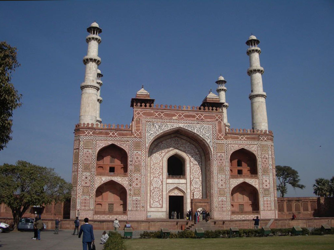
.
This outstanding mausoleum commemorates the greatest of the Mughal emperors. The huge courtyard is entered through a stunning gateway. It has three-storey minarets at each corner and is built of red sandstone strikingly inlaid with white marble geometric patterns.
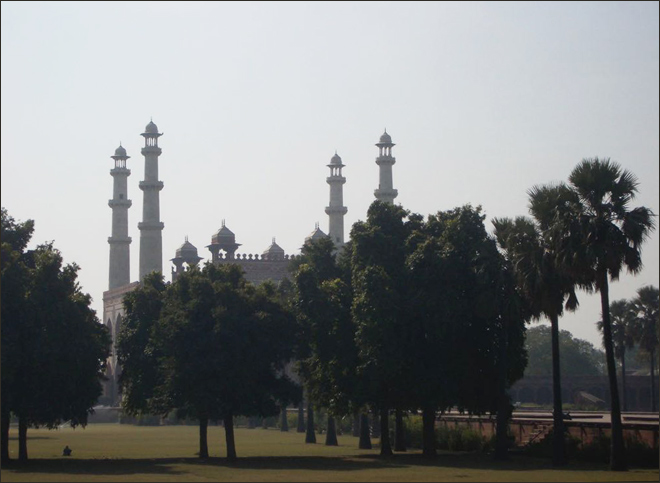
The tomb itself lies in the centre of a peaceful garden, where deer graze, monkeys play in the trees and raucous peacocks and parakeets make their presence felt.
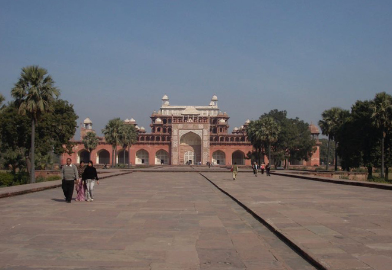
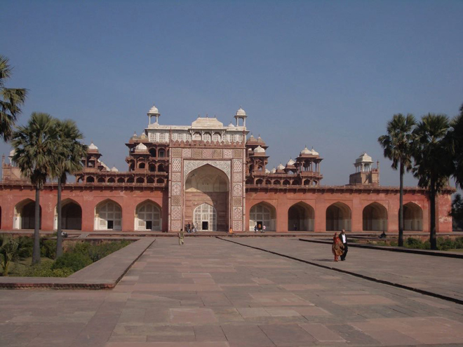
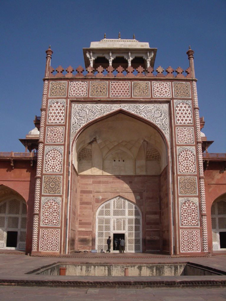
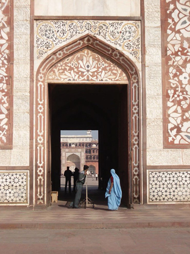
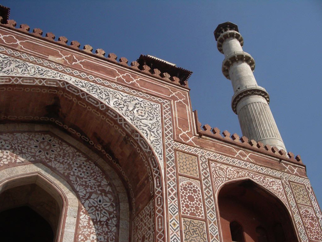
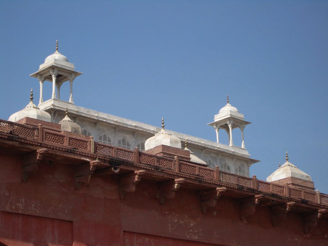
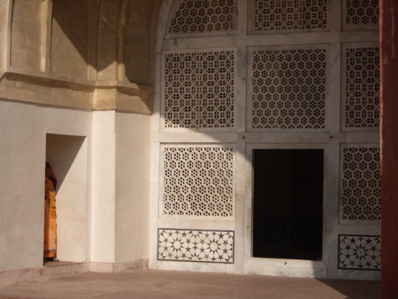
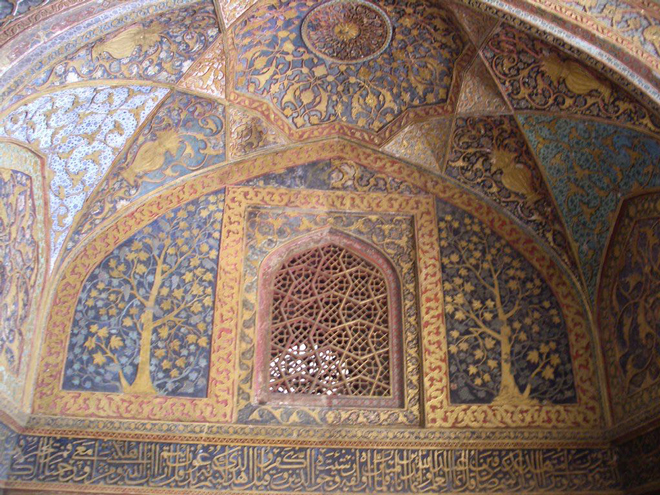
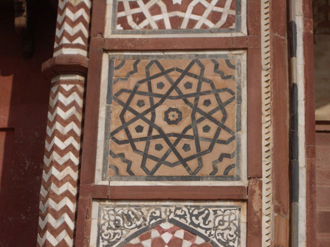
Akbar's cenotaph is in the mausoleum but the true tomb, as per traditions, lies below it. After his death, Akbar's son Jahangir completed the construction in 1605–1613. During the reign of Aurangzeb, Jats rose in rebellion under the leadership of Raja Ram Jat. Mughal prestige suffered a blow when Jats ransacked Akbar's tomb, plundering and looting the gold, jewels, silver and carpets. According to one account, even Akbar's grave was opened and his bones burned.
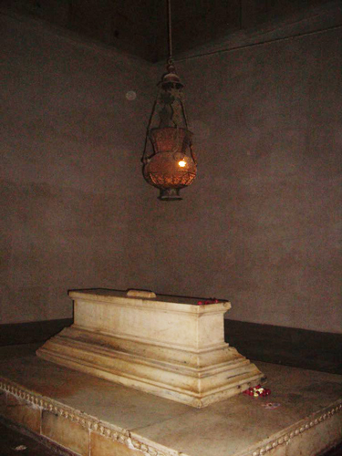
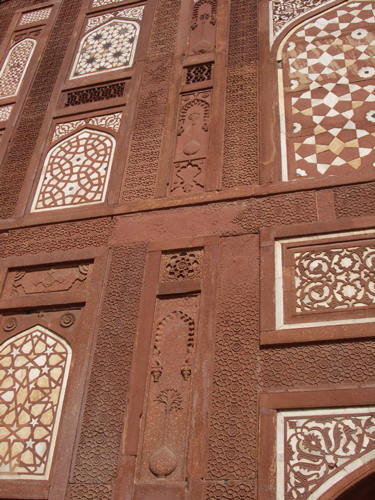
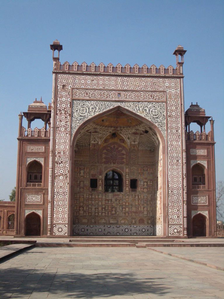
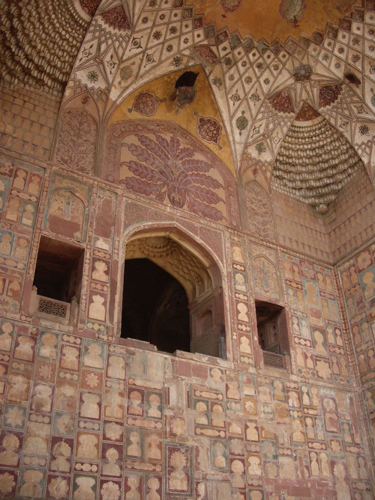
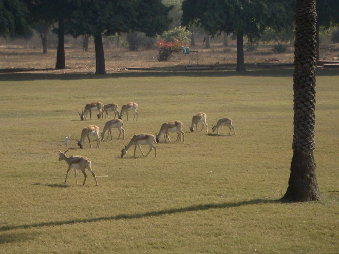
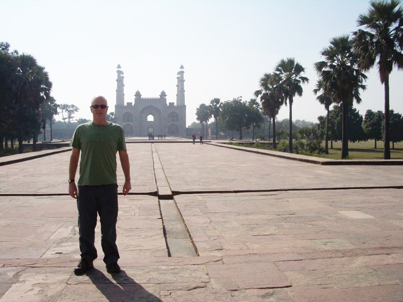